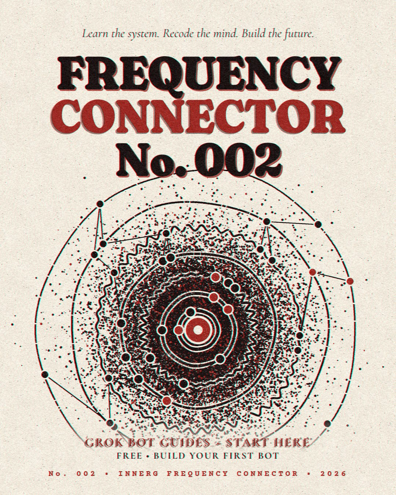
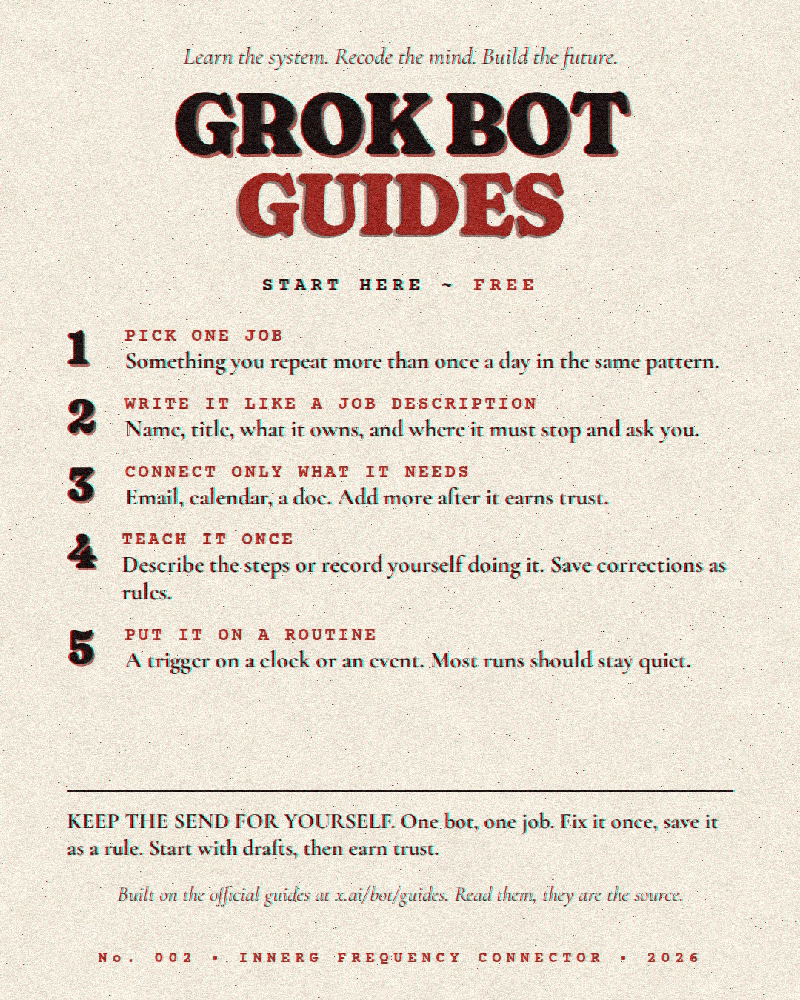

Build your first bot.
A plain-language start on the official Grok Bot guides. Pick a job, write it down, connect only what it needs. Free, from INNERG INTEL.
Built on the official guides at x.ai/bot/guides. Read them, they are the source.

FREE from INNERG INTEL.
Learn the system. Recode the mind. Build the future.
This is a plain-language starter built on the official Grok Bot guides. The guides are written by the people who build and use Grok Bot, and they are the real source. Read them here: https://x.ai/bot/guides
What a bot is
A Grok Bot is an agent with its own computer in the cloud. The official guide puts it this way: "Grok Bot is an agent with a computer." It can use apps, browse the web, and write and run code. It keeps working after you close your laptop. When it needs you, for a CAPTCHA, a 2FA code or a password, it hands the screen back or sends you a secure form.
Start here: https://x.ai/bot/guides/grok-bot-101
Build your first bot in five steps
- Pick one job you repeat. If you do something more than once a day in the same pattern, that is a good first job.
- Write the job like a job description. Give the bot a name, a title and a description. Say what it owns, what it checks, and where it must stop and ask you. The guides say that last part matters most.
- Connect only the tools that job needs. Email, calendar, a doc, a sheet. Add more later.
- Teach it once. Describe the steps, or record yourself doing the task on the bot's computer so it keeps the click-path.
- Put it on a schedule. A routine is a trigger, on a clock or on an event, that runs whether you show up or not. Most runs should say nothing. A routine that looks and decides you do not need to know is doing its job.
Five habits from the guides
- Keep the send for yourself. Let the bot research and draft. You press send, post and approve spending.
- One bot, one job. Several small specialists beat one bot that tries to do everything. When you have several, give them one front door so you talk to one bot, not twenty.
- Fix it once, save it. When you correct the same thing twice, turn the correction into a rule or a skill.
- Give it your voice. Ask the bot to read your own sent messages and write a style guide before it drafts for you.
- Start small and earn trust. Begin with read-only or draft-only. Add more access after the bot delivers good work.
Keep it safe
- Rules are written in plain words in Settings, and a separate reviewer checks what the bot wants to do.
- A shared computer means a login made by one bot can be reached by your other bots.
- Never type a password into chat. Use the secure form the bot sends you.
- Share a bot as a template and you share a recipe, not a copy. Secrets and custom code are left out. If you install someone else's template, open View Details and read what is inside first.
Through the INNERG lens
This part is INNERG INTEL's own framing, not from the official guides.
- DEPROGRAM: notice the chores you do on autopilot. Who taught you that you have to do them by hand?
- RELEARN: read the guides and learn how the system works before you build.
- RECODE: write the job description and the rules. Choose what the bot does on purpose.
- REBUILD: grow a small team of bots you own, with you making the final calls.
The goal is the same as every INNERG INTEL connector. You are not here to depend on a bot for answers. You are here to build the capacity to investigate, decide and act. The bot is a tool. You keep thinking.
Read the official guides
- Grok Bot 101: https://x.ai/bot/guides/grok-bot-101
- Grok Bot for Work: https://x.ai/bot/guides/grok-bot-for-work
- Templates for Grok Bot: https://x.ai/bot/guides/templates-for-grok-bot
- How I run multiple teams of Grok Bots: https://x.ai/bot/guides/how-i-run-multiple-teams-of-grok-bots
- Role guides for engineering, design, product, marketing, sales, support, recruiting and legal are on the hub.
Credit: all guides are by their listed authors at x.ai. Thanks to Melvin Vivas (@melvindvivas) for sharing the hub. This page is a short beginner summary, and the quoted lines are from the official pages.
Stay up to date
Each Frequency Connector carries a number, a version and a "last updated" date. This is No. 002, version 1.0, last updated 2026-11-26, published 2026-11-26.
One page to keep
Print it or save it to your phone. It is the whole start on one page.
Download the one-pager (JPG) Download the one-pager (PDF)


For your agent
Every Frequency Connector has two sides: this page for you, and a skill for your agent. Install the skill once and your agent works with the same ideas.
Download the skill (.zip) Open SKILL.md
- In Claude, open Customize, then Skills, click +, choose Create skill, then Upload a skill, and pick the zip. Do not unzip it.
- In Grok, ChatGPT or another agent, paste the contents of SKILL.md into your custom instructions, or at the start of a chat.
Or let your agent do it. Copy this and paste it in.
I want the free INNERG Frequency Connector No. 002, Grok Bot Guides. Open https://innergclaw.github.io/nas-hub/frequency-connectors/no-002-grok-bot-guides/ , download the skill, and help me install it. Then use it when I ask how to build or run a Grok Bot.
Back to all Frequency Connectors
Credit: the official Grok Bot guides at x.ai/bot/guides, written by their listed authors. This page is a short beginner summary. Not affiliated with x.ai. Product names belong to their owners.